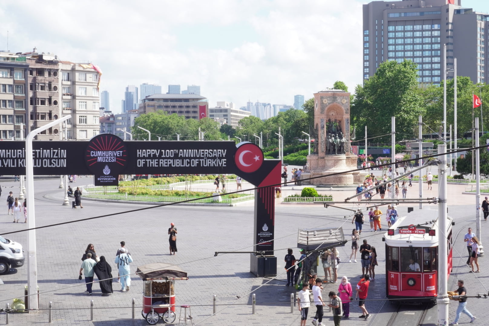
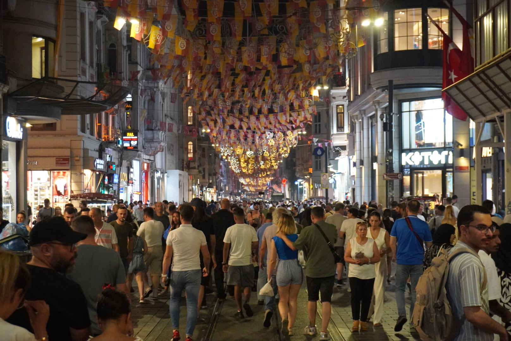

Welcome to the Wonderful World of Turkiye!
Thinking of heading to the ago old land of what was constantinople? Here you'll learn more about some of the must-visit places if you ever find yourself in the wonderful land of the Turks! Our destinations are all conveniently located in Istanbul, so no cross-country trecks will be required
First Stop: Nakkaştepe

Istanbul is an amazingly unique city! One of the many things that makes it so special is the fact that Istanbul is the only city on the planet that is placed in 2 continents; Europe, and Asia! Located at the near tip of the Asian side of Istanbul is Nakkaştepe! Nakkaştepe is a beautiful park that sits atop the hillside facing the Bosphorus Straits, and cascades naturally down the hill as a beautiful park.
At the park theres' tons to see and do! During the summer months specifically, it's a popular place for wedding photos and photoshoots in general. You can zipline from the top of the park to the bottom after picking up some ice-cream from one of the many vendors around the park. You can also follow the directories posted all around the park and try out some of the cafes and sightseeing spots in the park to get a better view of the suspension bridge that sits just outside of the park's boundaries! You could easily spend a few hours here, and if you start the trek at the top of the park, then by the time you get to the bottom, you'll have had plenty to see and do, and be ready for the rest of the adventures and sights to see along the Straits!
Second Stop: The Blue Mosque
With that, we have arrived at our second stop: The Blue Mosque. The Blue Mosque was originally built in the early 17th century, and used to be very near the center of what is modern day Istanbul! It has some stunning architecural features that are sure to wow anyone who has the opportunity to see them for themsleves! A fun fact about this mosque is that it still functions as a religious site, but there is a space just for visitors to go through and have an opportunity to look around and explore. Just make sure your pants fall below your knees, or else you'll be turned away at the doors! To this day, it remains one of the largest mosques in Turkiye!
There's tons to see and do around The Blue Mosque as well! Directly across from it sits the Hagia Sophia, another historic site that is definitely worth your time if you have the opportunity to stop by and explore. There's also a variety of different vendors and local shops and eateries all around the mosque. Located not too far away, resides the Grand Bazaar, where you can shop (and probably get lost) for hours or even days on end! All in all, there's tons to see and do after taking your time to behold the beauty of the Blue Mosque!
Third Stop: Taksim Square
Welcome to our third and final stop: Taksim Square. I'll start this off by saying that I absolutely love Taksim Sqaure, so I may be a little bit biased towards its good sides! Taksim square looks like an ordinary plaza with moderate levels of business and traffic in the day, but at night, is transforms into one of, if not thee liveliest places in the entire country. Istanbul is comparable to New York in terms of traffic and business, and if we stick with that example, Takism Square is comparable to Time Square! The space never dies and people can be seen roaming all around at any and all hours of the day. There are vendors, trams, and performances running all around and throughout the square. For how busy the square is, it is equally as safe! Many children can be seen all by themselves as there is little fear due to general trust among the population and the almost 24/7 presence of law enforcement! Everyone is sure to find something that they can enjoy in or around the square, which leads us to our bonus piece: somewhere fun around the square!
Bonus: Istiklal Street
Jumping right in, at one of the ends of the square is probably the busiest place in the entire country: Istiklal Street! Lined with shops and vendors of all kinds, and literally flooded with people, Istiklal has something for everyone! From arcades to designer fashion, and all the way to exotic international imports, you can find basically anything on this jam packed street. The tram line runs straight down the center though, so watch out and make sure you're off the tracks in time!
Because Taksim Square is situated at the top of one of one of the many hills that makes up inner Istanbul, there's almost nothing that is out of reach once you're there. With a central location, great food and vibes, and a whole lot of energy, Takism Square is sure to be one of your favorite places too! The liveliness is unmatched and the frendliness of the people make for an inviting experinece that is sure to leave a lasting impression on you! As with any overly busy place though, just be sure to stay vigilant and aware. As safe as it may be, anything could happen!